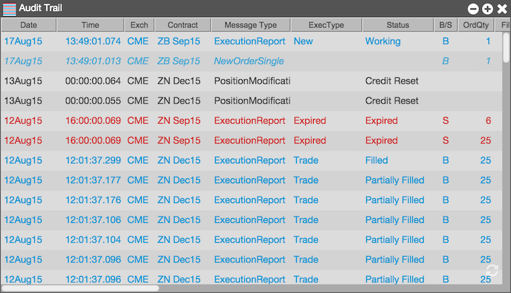

The Audit Trail widget displays all of the details of your order activity, exchange announcements, and error messages. In real-time, you will only see a subset of all the available messages. If you refresh your Audit Trail, it will pull all of the details from the TT platform. TT stores this information forever so that you can retrieve the history of all your activity.

The Audit Trail is always capturing data, even if you log out and turn off your machine or device. Your "forever" Audit Trail is persistent starting from the moment you open your account, and you can access and mine your data at all times from the device of your choosing. The latest messages that are captured appear at the top of Audit Trail.
Note: A red bar appears under the column headings of the Audit Trail when you are not at the top of the message queue as you scroll through your messages.